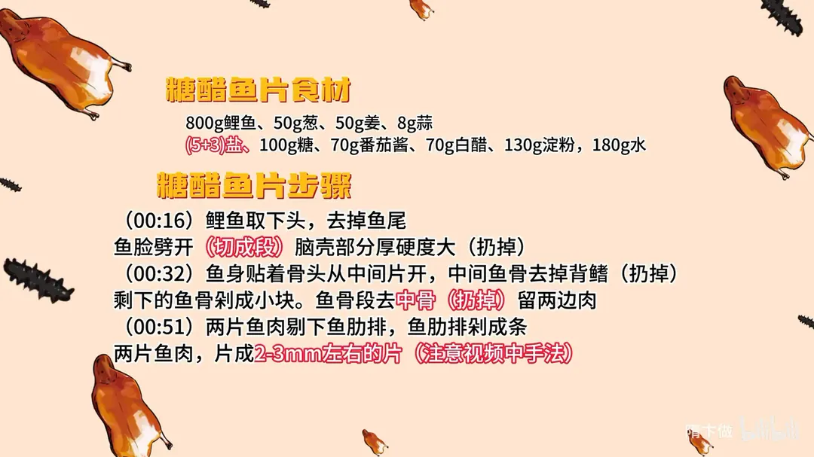
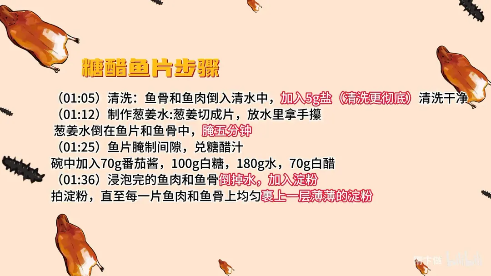
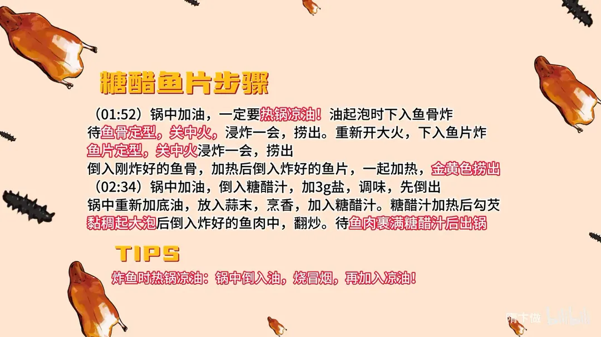

糖醋鱼片
隋卞一做。800g 鲤鱼取下头尾，贴着骨片出两片鱼肉，再片成 2–3mm 的鱼片，鱼肋排剁条、鱼骨剁块一起炸。糖醋汁是 70g 番茄酱、100g 白糖、70g 白醋、180g 水，热锅凉油复炸到金黄，蒜末烹汁、勾芡裹匀。
原视频：https://www.bilibili.com/video/BV17x4y1i7aL
食材
鲤鱼、葱、姜 等 10 样
| 类别 | 用料 | 用量 |
|---|---|---|
| 主料 | 鲤鱼 | 800g |
| 配料 | 葱 | 50g |
| 配料 | 姜 | 50g |
| 配料 | 蒜 | 8g |
| 调料 | 盐 | （5+3）g |
| 调料 | 糖 | 100g |
| 调料 | 番茄酱 | 70g |
| 调料 | 白醋 | 70g |
| 调料 | 淀粉 | 130g |
| 调料 | 水 | 180g |
步骤
- 取鱼：鲤鱼取下鱼头，去掉鱼尾；鱼脸劈开切成段，脑壳部分又厚又硬，直接扔掉。
- 分鱼身：鱼身贴着骨头从中间片开，去掉中间的鱼骨和背鳍；剩下的鱼骨剁成小块，鱼骨段去中骨、只留两边肉。
- 片鱼片：两片鱼肉剔下鱼肋排，肋排剁成条；两片鱼肉片成 2–3mm 左右厚的片。
- 清洗：鱼骨和鱼肉倒入清水，加 5g 盐清洗干净，加盐洗得更彻底。
- 葱姜水腌制：葱姜切成片放入水中，用手攥出味；葱姜水倒在鱼片和鱼骨中，腌 5 分钟。
- 兑糖醋汁：腌鱼的间隙兑汁，碗中加 70g 番茄酱、100g 白糖、180g 水、70g 白醋，搅匀备用。
- 拍粉：腌完的鱼肉和鱼骨倒掉水，加入 130g 淀粉拍匀，直到每一片鱼肉和鱼骨都均匀裹上一层薄薄的淀粉。
- 炸制：锅中加油，一定热锅凉油，油起泡时下鱼骨炸；鱼骨定型后关中火浸炸一会儿捞出。重新开大火下鱼片炸，鱼片定型后关中火浸炸捞出。最后把鱼骨和鱼片一起回锅加热，炸到金黄色捞出。
- 挂汁：锅中加油倒入糖醋汁，加 3g 盐调味后先倒出；锅中重新加底油，放蒜末烹香，再倒回糖醋汁，汁加热后勾芡，黏稠起大泡时倒入炸好的鱼肉翻炒，待鱼肉裹满糖醋汁即可出锅。
小贴士
- 炸鱼的热锅凉油：锅中倒入油烧到冒烟，再加入凉油，鱼片下锅不易粘。
- 5g 盐用来洗鱼骨鱼肉，另外 3g 盐放在糖醋汁里调味，别弄混。
讲解要点
难度：★★★☆☆（难在片鱼和炸制，鱼片要片得匀、下锅要定型不粘连）
为什么这么做
- 鱼头、鱼脸、脑壳和鱼尾直接扔掉：这几块又厚又硬，炸不酥，留着只会硌牙、影响整盘的口感。
- 中间那根粗骨不要，肋排剁条、鱼骨剁小块：细骨和肋排炸得酥，只有中间那根粗骨怎么炸都不酥。
- 鱼片片成 2–3mm：太薄一炸就干、卷起来没肉；太厚炸不透，里外口感不一致。
- 加盐洗、再用葱姜水泡：盐洗掉表面的血水和黏液，鱼片更白、腥味更轻；葱姜水泡比直接放葱姜去土腥味更匀，泡过的鱼片拍粉也不出水。
- 拍到表面一层白淀粉：这层粉就是脆壳和糖醋汁的「桥」，粉太薄挂不住汁，炸出来也不脆。
- 热锅凉油、鱼骨鱼片分开炸再回锅：锅烧到冒烟再添凉油，锅壁被油封住鱼片不粘；骨厚片薄分开炸才都透，最后回锅统一脆度。
- 蒜末烹汁、勾芡到挂得住再下鱼片：芡把糖醋汁收成能挂在鱼片上的浓度，鱼片下锅迅速吸汁，才裹得满、咬得脆。
容易翻车
- 中间那根粗骨没去掉，咬着硌牙，还炸不酥。
- 鱼片片得太薄，一炸就干硬；太厚又炸不透。
- 淀粉拍得太厚或太湿，壳硬，浇汁后糊成一坨。
- 油温不够就下锅，鱼片粘连、脱粉。
- 芡勾得不到位，鱼片挂不上汁，成了「汤泡鱼」；炸好放凉再浇汁，脆壳也会回软。
热评补充
- 剔下来的鱼骨、鱼头别扔，拍粉炸酥撒椒盐，就是一道下酒小菜。
原片尾卡



原片文案
AI 字幕校准稿
钓鱼的小伙伴给我们发私信，钓上点鲤鱼来，刺也多，土腥味又重，不知道回家怎么做。后来我一琢磨，就按照今天的方法去做，都会让你们做得特别好吃。来吧，糖醋鱼片。
市场上随便买了一条鲤鱼，去头、鱼脸、脑壳部分——这咱就炸不酥了，这就扔了，鱼尾也直接扔掉。中间片开，把鱼的背鳍做掉，鱼骨剁成段，两边的肉都可以留着吃。
这个中间的骨头太硬了。鱼肉把鱼肋排剔下来，剁成条，两片肉给它片成片，2 到 3 毫米厚吧。
得清洗一下，加上一勺盐。然后我们做点葱姜水：就把葱姜切成片，搁水里，拿手给它攥一下，这个味可以兑鱼片，先泡上。
我们把那个糖醋汁兑一下：番茄酱、白糖、水、白醋，所有的比例你们不用记，都会给你们放到片尾。泡好的鱼片把水倒掉，放玉米淀粉，拍到表面一层白白的淀粉就可以了。
上火开始炸鱼。这个也需要热锅凉油：锅里面的油烧到冒烟，再继续往里加凉油。全部定型了，一个是一个了，给它稍微关小点火，浸炸一会。然后把刚才咱们炸的鱼骨倒进去，鱼片再倒进去，两个一起加热，捞出来了。来放一点底油，放盐，再放一点底油、蒜末、糖醋汁，开锅勾芡，倒入炸过的鱼片，炸过的鱼片迅速吸汁，出锅了。
嘎嘣脆，嘎嘣脆，太好吃了。鱼骨头吃着又酥又脆，还裹满了那个酱，太好吃了。鱼在浸泡的时候，葱姜水一定要加；然后鱼骨中间那个特别粗的那根骨头一定不能要，那是真的炸不酥的，其他地方都剁成小块。一定要趁热吃，酸酸甜甜，脆脆香香。